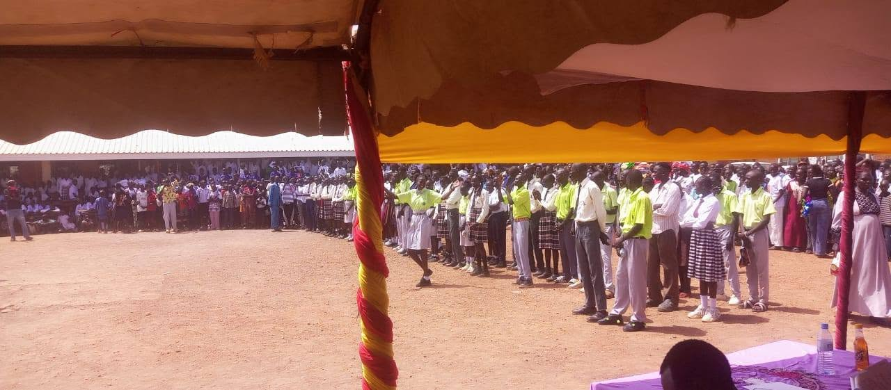

Our Programs
Seven integrated thematic areas driving equitable development across South Sudan.
Programmatic Focus
Seven Thematic Areas
ERA-SS implements a holistic approach that addresses the root causes of vulnerability and inequality. Our programs are interconnected, each reinforcing the other to create sustainable and lasting change.
Education
We improve access to quality learning for children and youth, especially girls and those in crisis‑affected areas. Activities include teacher training, provision of learning materials, construction of temporary learning spaces, and inclusive education programs.
Agriculture & Livelihood
We support communities with climate‑smart farming techniques, vocational skills training, and small enterprise development. Our goal is to reduce food insecurity and create sustainable income opportunities.
Peacebuilding & Advocacy
Through dialogue, reconciliation workshops, and community‑led peace initiatives, we foster social cohesion. Our advocacy work amplifies local voices to influence policy at national and international levels.
Youth Empowerment
We equip young people with leadership, digital, and life skills. Our youth networks and innovation hubs provide safe spaces for personal growth and civic engagement.
General Protection
We prioritize the safety and well‑being of vulnerable groups including women, children, the elderly, and persons with disabilities. Our protection activities include case management, psychosocial support, and referrals.
Gender Equality
We tackle gender‑based violence and discrimination by empowering women economically, promoting women’s leadership, and engaging men and boys as allies. Gender equality is integrated across all our programs.
Climate Resilience
Communities are at the forefront of climate adaptation. We promote conservation, reforestation, sustainable agriculture, and disaster risk reduction to build resilience against floods, droughts, and other climate shocks.
How We Deliver
Delivering Sustainable Impact
At ERA-SS, our programs are designed to respond to the real needs of communities while creating long‑term, sustainable change. We work closely with local leaders, government institutions, community‑based organizations, women, youth, and development partners to ensure every intervention is inclusive, locally owned, and evidence‑based.
Community‑Led
Communities actively participate in identifying priorities, designing solutions, and implementing projects.
Evidence‑Based
Programs are guided by research, assessments, and continuous monitoring to maximize impact.
Inclusive
We ensure women, children, youth, persons with disabilities, and other vulnerable groups are fully included.
Sustainable
We strengthen local capacity so communities can continue benefiting long after projects are completed.
Our Impact
Numbers that Speak
Children enrolled in education programs
Farmers trained in climate‑smart agriculture
Youth leaders empowered
Peace dialogues facilitated
Integrated Principles
Cross‑Cutting Themes
Every ERA-SS program integrates key principles that strengthen effectiveness and ensure no one is left behind.
Gender Equality
Disability Inclusion
Child Protection
Environmental Sustainability
Community Participation
Accountability to Affected Populations
Collaboration
Working Through Partnerships
ERA-SS collaborates with government institutions, community‑based organizations, civil society, local leaders, national and international NGOs, development partners, and the private sector to deliver impactful and sustainable programs across South Sudan.
We believe that strong partnerships enhance local capacity, promote innovation, and maximize the long‑term impact of our interventions.

Accountability
Measuring Our Impact
We continuously monitor, evaluate, and learn from our programs to ensure resources are used effectively and communities experience meaningful, lasting improvements.
People reached
Communities supported
Schools & learning spaces improved
Farmers & entrepreneurs trained
Peacebuilding initiatives completed
Women & youth empowered
Environmental restoration activities
Community feedback & satisfaction